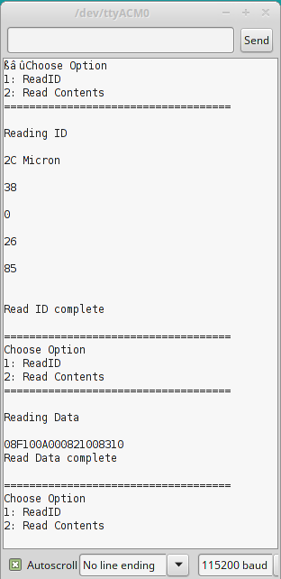

Arduno based NAND chip reader
February 28 2017
I have never been a big fan of the use of Arduino's in embedded projects. They do have their place if you need to develop a simple fast prototype proof of concept. However, there are many other development boards based on other architectures that are much more flexible and much more powerful in the same price range. One of the reasons why Arduino is so popular is ease of use for someone who does not have much experience with hardware projects. Also there exist a vast library that is very easy to import directly from the IDE. Chances are if you are doing a project in the Arduino environment, someone has written a library that will cut down on the amount of time you have to spend coding or looking at a datasheet. I think this is both an advantage and disadvantage. It is easy to sacrifice performance when using higher level functions and you have no idea what is going on under the hood.
One of my current projects is reverse engineering a head unit (aka radio) like the model in my vehicle. After spending some time searching on the PCB for an open serial connection that could possibly give me a shell, I decided to try to read the NAND memory. This is something that I have no experience doing, but I know at some point in my career I will likely need this skill so now is a perfect time to learn. I done some searching on ROM programmers/readers online to check the prices. I found a couple of Chinese made readers/programmers on Ebay for $150 - $200. One of the issues with these devices is they seem to only support up to 4GB. Another option (perhaps the best for anyone doing security research) is to invest in a Xeltek. But at $1600 plus the price of each adapter, it is hard to justify the purchase.
I have a tool I am working on SRET that will eventually be able to read both NAND and NOR flash chips, but it is nowhere near in a state to test such a feature. I did want something that would allow me to develop a quick tool over the weekend with equipment that I already have. One option is using one of the FPGA boards I have lying around. This would no doubt be the best option I could interface it with something like an SD card, but it might require a bit more time than I would want to put into the project. Another option would be throwing something together with a dsPIC dev board I built a couple of years ago. While this would still be a better option that the Arduino (more on that later), I wanted to build something that could be used by someone who does not have much experience in embedded development without too much modification. I choose an Arduino 2560 due to the high number of pins that would allow me to match the pin number on the chip, with the pin number on the Arduino.
The chip in question.
I used hot air to remove the chip. After removing the chip and letting it cool a moment, I gave it in a quick alcohol bath to remove any leftover flux residue from the pins.
The only thing I would need to do the project that I did not have is an adapter to hold the chip so that I could wire it to the Arduino. I found a $7 TSOP 48 socket that came with a PCB breakout. The chip fits nicely inside.
After taking the chip off and locking it into the socket, I can easily wire the adapter to the Arduino. Time to get programming.

One thing that is very important when doing embedded development to have a clear understanding of how the device you are either programming or communicating with operates. It is easy to destroy (aka let the magic smoke out) an IC if it is wired incorrectly, or operating at the wrong voltage. Most NAND chips operate at 1.8 or 3.3 volts. This could be in issue since the Arduino's operating voltage is 5V. The Arduino does have a 3.3V power pin that I am using to power the chip, but any pin operating as an "OUTPUT" will be 5V. I am trusting the chip's diodes on the I/O pins to get rid of the excess voltage. Let this be a warning if you plan on using the design on your own. One way to overcome this issue is using a logic level shifter circuit for each line.
After reading though a couple of NAND datasheets I put together a quick Arduino sketch that would read the chip's ID and some random page data from the chip. The process behind reading a NAND flash is what makes using an Arduino a bad idea. The databus is used for both sending command and retrieving data from the chip. This means in order to do what is called Bit Banging for a NAND memory, the I/O ports need to be first set to output. A command is then sent to the chip. The I/O ports will then need to be set to input and the data read off the bus. The data bus can be either x8 or x16, meaning the bus is capable of sending an entire byte or two bytes at a time. Besides the data bus there are also control pins that need to be toggled in a certain sequence depending on the command that is being sent.
**When reading datasheets some of the pins might have a '#' at the end or bar over the pin (e.g. ā), this means that the pin's logic is inverted**. The event of changing the pin's logic is sometimes called pulling the pin high or low. Pulling the pin high means sending voltage to the pin, likewise pulling the pin low means sending ground to the pin. An example command sequence would be reading the ID of the chip. First set the I/O pins to OUTPUT then the CLE (command latch enable) needs to be pulled high and the WE#(write enable) needs to be pulled low. The CE#(chip enable) pin then needs to be pulled low. After the CE# pin is low a command can be put on the I/O bus. In this case to retrieve the ID a 0x90 needs to be written to the bus. After the command is written to the bus, the CLE pin needs to be pulled low, and the WE# pin needs to be pulled high. The chip now knows that you would like the contents of the ID register. However, it needs to know which address you would like. For most cases the ID is at address 0x00. Before the address is put on the bus the ALE(address latch) needs to be pulled high and the WE# pin needs to be pulled low. The address is then written to the I/O bus, and the pins are set back to their previous state. The chip is now ready to give you the ID contents. The I/O bus pins needs to be set to INPUT. Toggle the RE#(read enable) pin 4 times saving the contents of the I/O bus each time. The chips ID has now been retrieved. It is this toggling of pins that makes using an Arduino a bad idea for doing this job in a timely manner.
While the Arduino will get the job done, it will be slooooooow. How slow? Well to read the entire contents of my 8GB NAND flash it would take atleast 7 days. Of course if you only had a sub GB chip the day spent reading the chip might be tolerable. Especially if you already have an Arduino handy. So why is it so slow? Well to start, the Arduino Mega 2560 I am using only has a 16Mhz oscillator. Second the built in pin control functions take a horrendously long time to actually have effects on the pin. There are ways to speed up the process. However in the process of rewriting the basic functionality that makes the Arduino so easy to use, at some point you start to lose the reason behind why you would want to use an Arduino in the first place. Let's take a look at an example to prove my point.
I wrote a very simple loop that will toggle a pin as quickly as possible. Attaching a logic analyzer shows the pin taking 7.625us to toggle, and 15.46us to make a full cycle. When you need hundreds of thousands of cycles to dump the memory contents, that time adds up quickly.
Now let's compare the performance to that dsPIC dev board I mentioned earlier. Remember the Arduino has a 16Mhz oscillator driving the controller. The dsPIC dev board has a dsPIC33ep512gp806 with a internal 7.37Mhz RC oscillator. One major advantage of this chip is it has a built in PLL that can make the chip operate at speeds up to 70Mhz. However, I wanted to see the performance at the default setting so I left it at 7.37Mhz. The performance of the PIC in default mode is much better in comparison than the performance of the Arduino. Toggling was cut down to 4.375us and 8.70us for a full cycle.
In conclusion while it is possible to read NAND flash chips with an Arduino, there are much better options available. If you already had an Arduino and don't want to spend the time or money on a more powerful ARM dev board, I have made my code available on my github, (link below). The Read ID function should work without any modification, however the Read Contents is written for the chip I was using specifically. You will need to read your chip's datasheet and set the page size, block and plane settings, and any other characteristics that are associated with your chip. Feel free to send me a pull request if you make any modifications.
BONUS
Some data in French that was pulled from the NAND.
Introduction to NAND flash
Code


{kind=link}
{kind=link}
{kind=link}
{kind=link}
{kind=link}
{kind=link}
{kind=link}